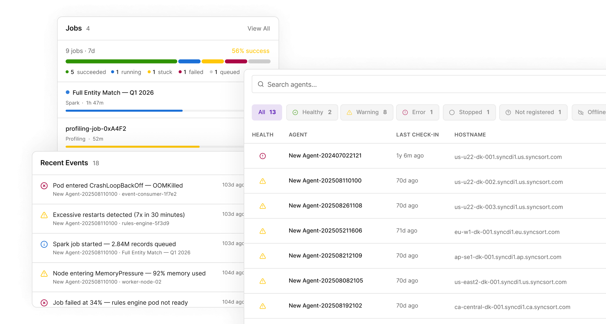

Command line to control room
Turned CLI-only agent management into one visual interface — upgrades, rollbacks, and health monitoring at a glance, with instant outage alerts. Human errors fell 80%.

Precisely is an enterprise data-integrity company and a recognized leader in the category. Its Data Integrity Suite is a modular set of cloud services for integrating, governing, and improving data at scale, used by thousands of large enterprises. The work below was for this suite.
The problem
Data stewards managed data agents entirely from the command line — upgrading and rolling back versions by hand. Seeing what a change would affect meant a long chain of commands; knowing whether an agent was even online meant hunting through the CLI or digging into its history on screen. The commands were long and easy to fat-finger.
The real problem
Two teams, one root cause: the CLI made routine, high-stakes work — version changes on live agents — both blind and error-prone. Back-end command logs showed people repeatedly mistyping the lengthy commands and burning time just to answer "what depends on this?" The fix wasn't a better command. It was making the system's state visible.
What I did
Combined two separate efforts version management (Data Integration) and an agent health dashboard (Data Configuration) — into one coherent control surface.
Designed the version-management experience upgrades, rollbacks, and a clear view of dependencies and downstream impact that the CLI kept hidden.
Designed and developed the health dashboard agentically, in code — so stewards get status, history, and instant outage alerts at a glance instead of querying for them.
Climbed into the back end with the engineers to learn how versioning actually works — affected files, dependencies, failure modes — so the UI reflected real system behavior, not a designer's guess.
Pushed for new interaction patterns over the familiar table layout, making the case to PM and engineering for why they served users better.
Impact
80% fewer task errors in internal testing validated with support engineers and fresh-eyes back-end engineers. (Production rollout was paused by a company-wide stack migration.)
Dependency impact that took a chain of CLI commands to uncover became visible at a glance.
Customers, shown the work via support engineers, expected a large cut in the time spent managing and monitoring agents.
The hardest call
Two fronts. Convincing the PM and engineers to leave the familiar table-style interface for new interaction patterns took repeated discussion and a clear UX rationale. Harder still was the technical climb: to design version management honestly, I had to understand how it actually works under the hood — which files change, what dependencies break, how the process runs — sitting with engineers until the system model was mine, not theirs. That depth is exactly what let me build the dashboard rather than just mock it.